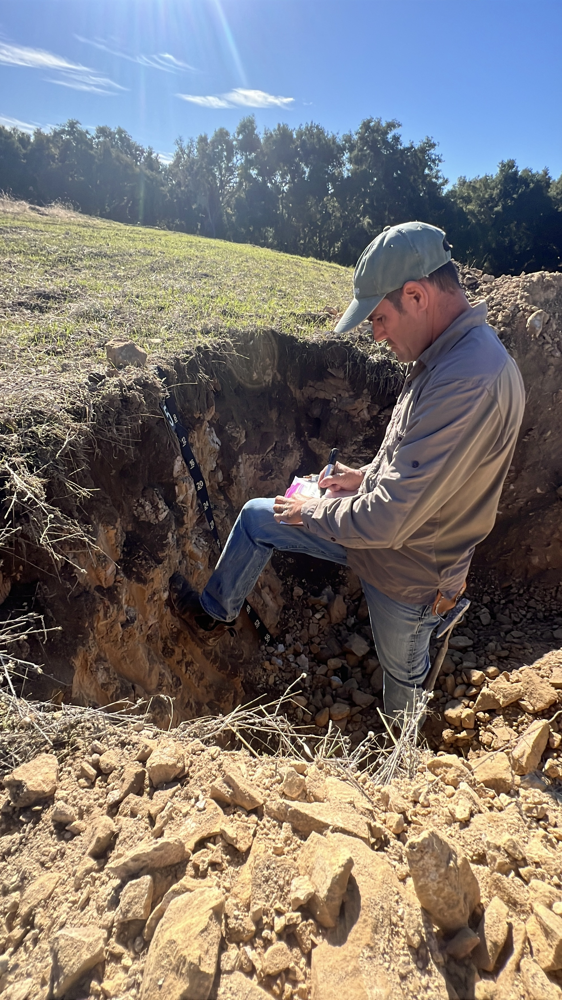
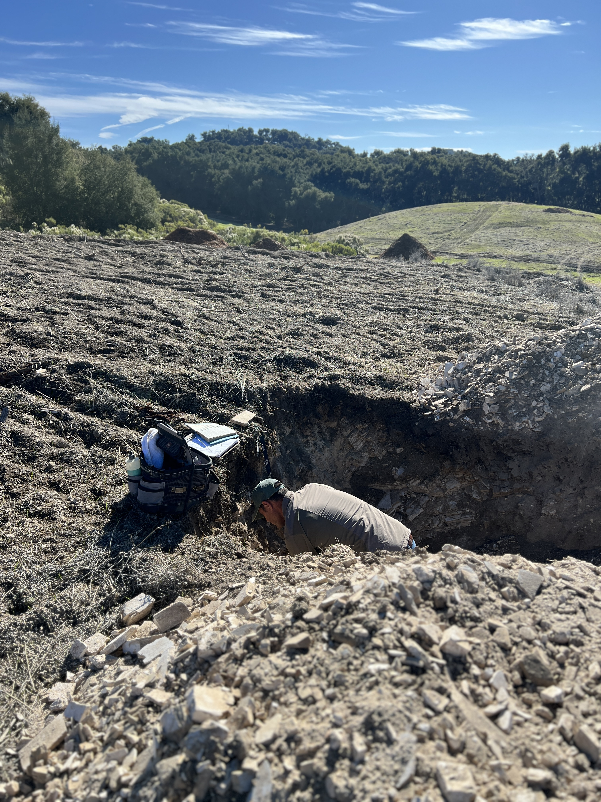
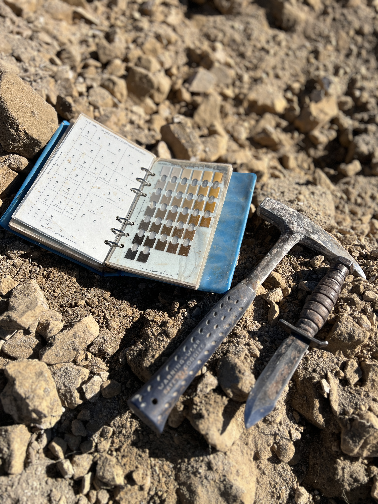
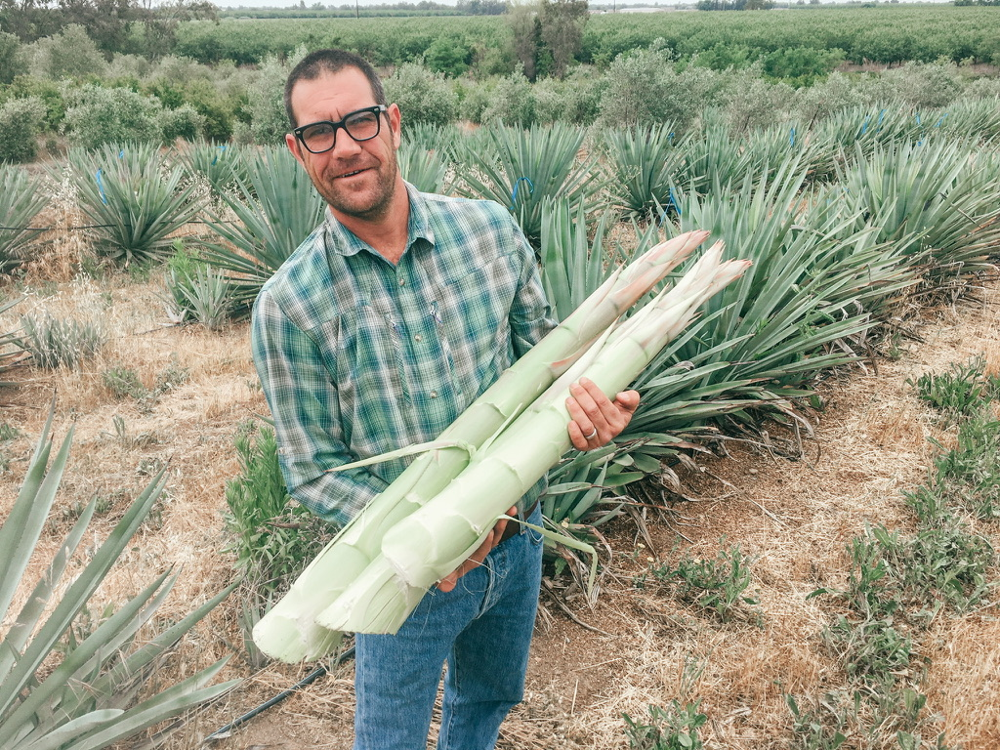

Paso Robles, California
I don't guess at what land can do. I read it, measure it, and tell you the truth.
I became a soil scientist because I believe the land tells you what it wants to grow. For 30 years I've helped landowners listen.
— Steve Vierra, C.P.S.S.

About Steve Vierra
Steve Vierra's story began in the vineyards of Paso Robles. While still a student at Cal Poly San Luis Obispo, he launched his first soil research project in 1997 at Laura's Vineyard in East Paso Robles — and Steve Vierra Agriculture was born. After graduating in 1999 with a degree in Soil Science, Steve earned his certification as a Certified Professional Soil Scientist (C.P.S.S.) and went on to design and install some of the region's most respected vineyards.
What started as a young scientist's curiosity about the relationship between soil and plant has grown into a career spanning three decades and four continents. Steve's vineyard experience includes work in New Zealand, Chile, and Australia — bringing a global perspective to every California project he takes on.
Back home on the Central Coast, Steve has spent over two decades in senior operational roles — first as a resident soil scientist and vineyard manager for a prominent Paso Robles viticulture firm, then as Director of Vineyard Operations overseeing hundreds of acres of wine grape production across multiple properties. Along the way he pioneered mechanized farming practices that helped reshape how Central Coast growers think about efficiency and quality.
In recent years, Steve has emerged as the leading local expert in spirit-quality agave cultivation, helping wine grape growers explore viable alternative crops suited to California's evolving climate and water landscape. It's a natural extension of his core philosophy: read the soil, understand the land, and grow what belongs there.
Work With MeFirst soil research project at Laura's Vineyard, East Paso Robles. Steve Vierra Agriculture established.
Graduated with a degree in Soil Science. Earned Certified Professional Soil Scientist (C.P.S.S.) designation.
Vineyard consulting across New Zealand, Chile, and Australia — building a global soil and viticulture perspective.
Senior operational roles across Paso Robles — resident soil scientist, vineyard manager, then Director overseeing hundreds of acres. Pioneered mechanized farming on the Central Coast.
Emerged as Central Coast's leading expert in spirit-quality agave — a natural fit for California's arid landscape and evolving water constraints.
Soil analysis, land evaluation, crop planning, farm management, and plant material sourcing — for wine grapes, agave, and beyond.
30 Years of Viticulture
Three decades of vineyard consulting has taken me from the Central Coast of California to the valleys of Chile, the cool-climate terroir of New Zealand, and the diverse growing regions of Australia. Every region teaches something new — and that accumulated knowledge comes to bear on every project.
The heartland of my practice. Thirty years working California's diverse AVAs — from the fog-cooled valleys of the Coast to the warm, calcareous soils of Paso Robles — have shaped every dimension of my consulting approach. Paso Robles' extreme diurnal swings, limestone-rich Calcareous soils, and water scarcity make it a perfect crucible for arid viticulture expertise.
My New Zealand work was rooted in Marlborough — the country's premier wine region and one of the world's most distinctive Sauvignon Blanc appellations. Working across the Wairau Valley's classic stony riverbeds and the cooler, windswept soils of the Awatere Valley sharpened my understanding of how subtle shifts in soil depth, drainage, and diurnal range translate directly into wine character.
My work in Chile was concentrated in the south-central growing regions — Curicó, Maule, and Itata — where granitic and volcanic soils, dry summers, and old-vine traditions create some of the country's most compelling terroir. These valleys deepened my experience with dryland farming, water-limited viticulture, and the agronomic potential of underrecognized regions.
Australia's wine regions span an extraordinary range of climates and soil types — from the warm, ironstone-rich soils of the Barossa Valley to the maritime-influenced granites of Margaret River. Consulting here broadened my perspective on old-vine systems, heat management in arid Mediterranean climates, and the parallels between Australian and Californian terroir challenges.
Vineyard Services
From raw land to first harvest — site assessment, variety and rootstock selection, layout and trellising design, and planting.
In-depth soil characterization, classification, and fertility analysis to match varieties and practices to your specific terroir.
Irrigation system design, deficit irrigation strategy, and dry-farming feasibility across arid and semi-arid climates.
Annual management programs for canopy architecture, crop load, cover crops, and soil health to consistently optimize fruit quality.
Assessment and strategic planning for underperforming or aging vineyards — disease management, replanting, and variety transition.
Drawing on experience across four countries — California, New Zealand, Chile, and Australia — to identify best practices and apply lessons from the world's most demanding terroirs.

Core Services
From raw land evaluation to long-term crop management, every engagement is shaped by rigorous soil science and real-world agricultural judgment.
Comprehensive land assessment combining soil profiling, topographic analysis, water availability, and micro-climate evaluation to determine agricultural potential and suitability.
Certified Professional Soil Scientist (C.P.S.S.) services including soil characterization, classification, fertility analysis, and remediation strategies tailored to arid and semi-arid conditions.
30 years of vineyard experience across four countries. Variety selection, rootstock matching, canopy management, irrigation design, and long-term viticulture strategy — from Paso Robles to the Barossa.
Specialized expertise in low-water, high-efficiency agricultural systems. Water-use strategy, drought-adapted variety selection, and land management for California's challenging dry climates.
Over a decade consulting on agave cultivation for spirits production, fiber, and ecosystem services. Site suitability, variety selection, cultural practices, and harvest planning.
Ongoing management programs integrating soil health monitoring, fertility scheduling, pest and disease strategy, and adaptive practices to optimize production over the long term.
Featured Focus
Few crops demand as much patience — or reward it as richly — as agave. Over the past 10 years, I have developed a deep, specialized practice in agave cultivation across California and the arid West.
From selecting the right species for your climate and soil, to designing planting layouts and long-term harvest plans, my work covers the full arc of an agave operation. Agave's low water requirements and emerging market for spirits production make it one of the most compelling crops for California's drier regions.
Good agriculture starts with understanding the ground beneath your feet. Everything else follows from there.
— Steve Vierra, C.P.S.S.
How We Work
We begin with a conversation about your land, your goals, and your challenges. No obligation — just an honest exchange about what's possible.
On-site soil evaluation, topographic analysis, water resource review, and climate characterization to build a complete picture of your land's potential.
A clear, science-backed plan tailored to your operation — crop selection, water management, soil health strategy, and a realistic timeline.
Hands-on guidance through planting, establishment, and ongoing crop management — with regular monitoring and adaptive refinement over time.
Good agriculture starts with understanding the ground beneath your feet. Everything else follows from there.
— Steve Vierra, C.P.S.S.Get in Touch
Whether you're evaluating a new property, developing an existing operation, or exploring agave as a crop — I'd welcome the conversation. Based in Paso Robles and consulting throughout California, the arid West, and internationally.